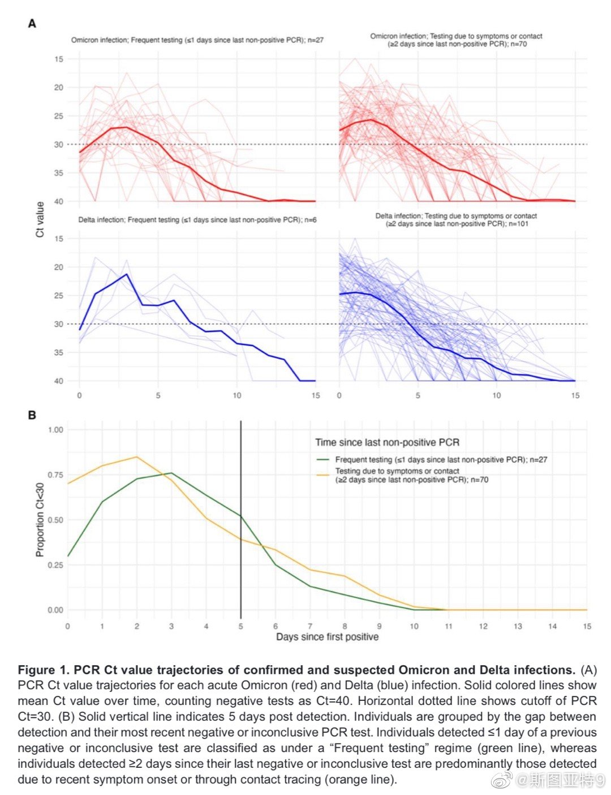
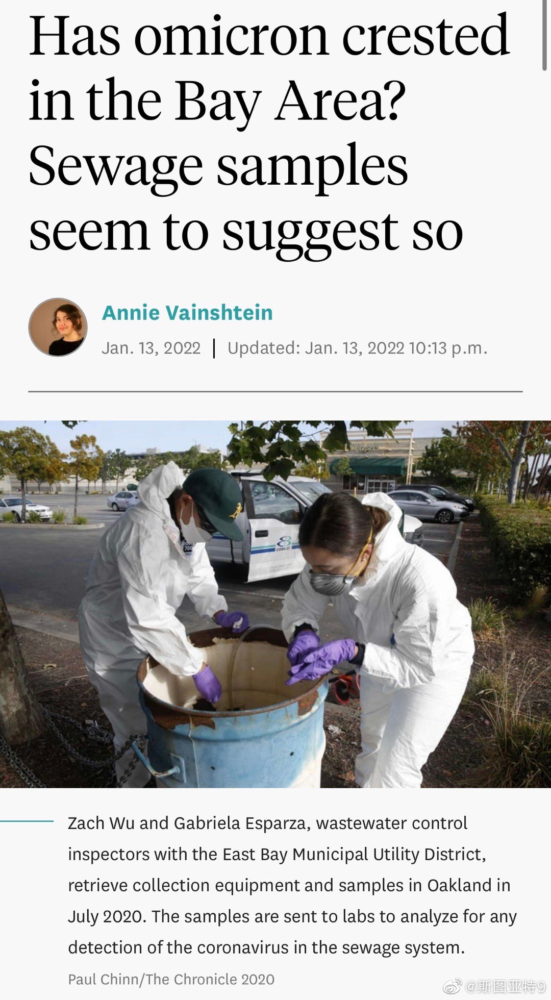

最新公布的未经同行评审的论文（网页链接）分析了NBA(😂)的测试数据显示，超过30%的感染者在五天后Ct值依然超过30，明显可以有传染性。看上去10天隔离更有道理，5天隔离后不经过测试就解除还是很有传染风险的。当然美国CDC估计心想的是死猪不怕开水烫了。 
据媒体报道，德约科维奇的律师说，澳大利亚政府第二次取消他的签证的理由即不是没有接种疫苗，也不是瞒报了入境前14天的行程，而是妨碍了澳大利亚的公共利益（public interest）。我看有人的解读是认为不驱逐他会助长反疫苗的人的气焰。听着靠谱吗？这官司有希望赢吗？
回复@LEGO的学xi日记:哦对，谢谢提醒！//@LEGO的学xi日记:这是个RNA病毒不产生DNA@斯图亚特9:“专家”号称确诊数不准，污水监控比确诊数准确。湾区废水里的病毒DNA在1月6日就拐点了，所以疫情很快就会好转 
 网页链接）分析了NBA(😂)的测试数据显示，超过30%的感染者在五天后Ct值依然超过30，明显可以有传染性。看上去10天隔离更有道理，5天隔离后不经过测试就解除还是很有传染风险的。当然美国CDC估计心想的是死猪不怕开水烫了。
网页链接）分析了NBA(😂)的测试数据显示，超过30%的感染者在五天后Ct值依然超过30，明显可以有传染性。看上去10天隔离更有道理，5天隔离后不经过测试就解除还是很有传染风险的。当然美国CDC估计心想的是死猪不怕开水烫了。